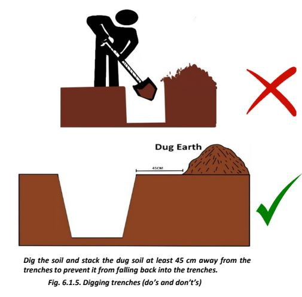

Excavation and Construction of Foundation
Excavation Process:

1. Mark the foundation trench width by placing pegs at both sides of the centerline, marked during layout, equal to the foundation width required.
2. Determine safe vertical sides of the trench wall by examining the soil quality.
3. Remove the soil’s top surface and remove the waste, organic materials, and other trash from there.
4. Ensure the flatness of the pit surface using a water tube level or with a scale and spirit level.
Load Bearing Structure
• Lay about 12 cm thick 1:5:10 cement concrete in the foundation trench and compact well to obtain a level surface.
• Provide 1 no 12mm dia vertical steel bar at every corner from the bottom of the foundation masonry.
• Construct foundation using bricks/blocks/coursed rubble masonry in cement mortar nearly up to the plinth level.
• The space around the foundation masonry is carefully filled with 100 mm thick layers of soil.
• If the soil of the filling is dry, then it should be moistened by spraying water.
• Each layer should be compacted by using a ground tamper. Make sure that it does not damage the foundation.
• Add layers sequentially on both sides of the foundation until the required height is reached, which is generally slightly more than the surrounding ground level.
• Any extra excavated soil can be filled in plinth.
Construction of Foundation
Foundation Work - Excavation of Foundation Trenches
● Once the centerline of the house plan has been marked on the ground, the width of the foundation is also marked on either side of the center line.
● We will use a foundation which is 75 cm wide and 60 cm deep. If the ground has loose and weak soil, you may have to use a bigger foundation, consult the JE-in charge.
● We thus get the foundation plan marked as shown.
● Start digging the foundation as per marks on the ground.
● Stack excavated soil about 45 cm away from the trenches so that it does not fall back into the trench.
Foundation Work:
● When Foundation trench is ready, select a masonry type for foundation.
● We shall use strip foundation in bricks or solid concrete blocks. If we opt for Confined Masonry in the superstructure, we will select foundation accordingly.

● Use 1 part cement and 5 to 6 parts sand for masonry mortar. Keep plinth height minimum 300mm, but it should be more than high flood level in the area.
● Refill trenches with available excavated soil in layers and compact well.
● Let us say, we select Brick masonry because good bricks are available in this Zone at a reasonable price.
● First, we will compact the base of the foundation trenches by ramming.
● Then we will lay a 10 to 15 cm thick layer of cement concrete 1:4:8 using 40mm down-size stone aggregate/gravel. At some undulations of the foundation trench, the thickness might be more to level the base. Never level the base by putting soil back in the trenches.
● Vertical corner steel bars will start from here.
● Over the base concrete, start brick masonry in foundation as per the figure given here.
● On reaching a level 75mm below the plinth level, 75 mm thick RCC plinth band is provided on top of the masonry using steel bars and cement concrete 1:1.5:3. The vertical bars, at every corner, pass through the masonry and also through the RCC plinth band.
● RCC plinth band is provided on all the walls in one go.
● Details of providing 12mm diameter steel bars in RCC bands is given under Tips for Earthquake Safety.

Tip 1: For Safety Against Earthquakes
● Zone C is mostly in earthquake zone IV. We must therefore take necessary measures as detailed below very carefully. These measures actually bind all the walls of a house horizontally and vertically by RCC bands.
● Vertical 12mm diameter bars are provided in masonry walls at every corner and wall junction from foundation to the roof. All the walls are tied together by RCC bands horizontally at plinth level, window sill level, door lintel level, roof level, and at gable level without any break. Any building when tied together like this can resist fairly strong earthquakes at a small additional cost.
RCC Earthquake Protection Bands:
● RCC earthquake bands consist of 2 nos. 12 mm diameter bars which are held together by 6mm diameter links at 200 mm apart. These bars are placed on masonry walls at plinth, window sill, lintel, roof, and gable level and are embedded in 1:1.5:3 cement concrete 75 mm thick.
● The steel bars in RCC bands do not terminate at corners, the bars are bent into the adjacent walls about 500 mm, as shown in the figures, at every corner and wall junction.
● The small dots at the corners are the vertical steel bars. See how the bars pass through the RCC bands at corners. Cast the RCC bands on all the walls at the same time in one go.
● The above details of placing steel bars are very important for safety against earthquakes. If bars terminate at corners they give no protection.